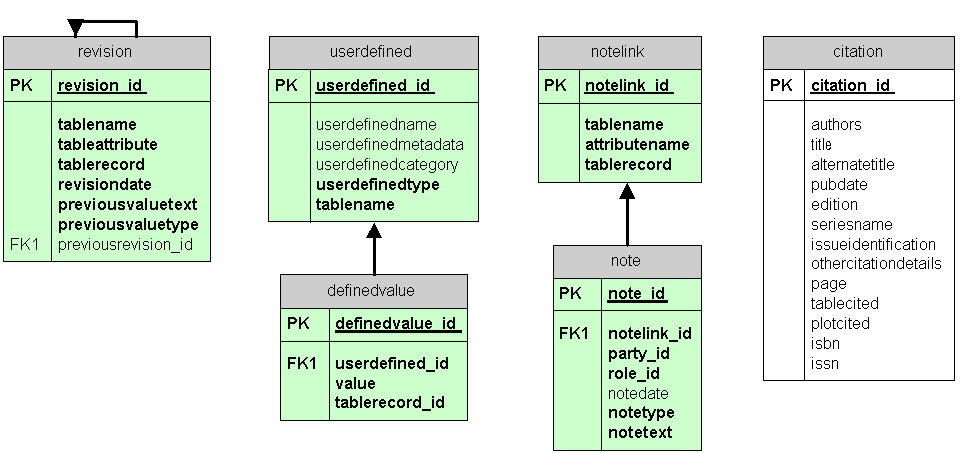

1. Supplemental tables provide added flexibility and functionality
2. Revisions are logged as that the status of the database at any date can be reconstructed.
3. Users may define fields specific to their own data and link these to any table in the database. Categories of userdefined fields are maintained to facilitate searching on these idiosyncratic fields.
